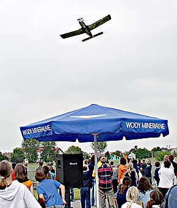
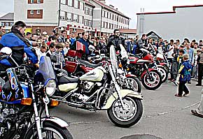
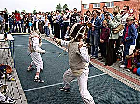

|
Autor: et, Korso, maj 2004
RADOMYŒL WIELKI W ramach gminnego programu przeciwdzia³ania alkoholowizmowi Urz¹d Gminy w Radomyœlu Wielkim wspólnie z Gimnazjum Publicznym zorganizowa³ 20 czerwca wielki festyn sportowo-rekreacyjny. Akrobacje i nie tylko Has³o przewodnie imprezy ,,Sport jest dobry na wszystko” doskonale oddaje to, co przez kilka godzin dzia³o siê na terenach rekreacyjnych miejscowego gimnazjum. Na licznie przyby³ych mieszkañców Radomyœla i ca³ej gminy, którzy nie bacz¹c na niepewn¹ aurê zdecydowali siê ca³ymi rodzinami wzi¹æ udzia³ w festynie, przygotowano wielogodzinny cykl pokazów, wystêpów artystycznych, konkursów, gier i zabaw plenerowych. Goœciem honorowym imprezy by³ senator Grzegorz Lato, który dla uczestników konkursu wiedzy pi³karskiej przywióz³ nagrody rzeczowe. Du¿e zainteresowanie towarzyszy³o pokazom szermierczym w wykonaniu m³odych zawodniczek z Radomyœla – podopiecznych trenera Zbigniewa ¯oli. Zwolennicy mocniejszych wra¿eñ mogli podziwiaæ kawalkadê ,,harlejowców”, pokazy ratownictwa medycznego i po¿arniczego, akrobatyczne popisy na rowerach w wykonaniu zawodników sekcji trialu z Mielca, a kto wie czy nie najwiêksz¹ atrakcj¹ tego popo³udnia by³y pokazy akrobacji samolotowej w wykonaniu Wies³awa Ceny z Aeroklubu Mieleckiego. Impreza trwa³a do wieczora, a zakoñczy³a j¹ dyskoteka dla m³odzie¿y.   Miros³aw Wnuk © 2006-2004 |